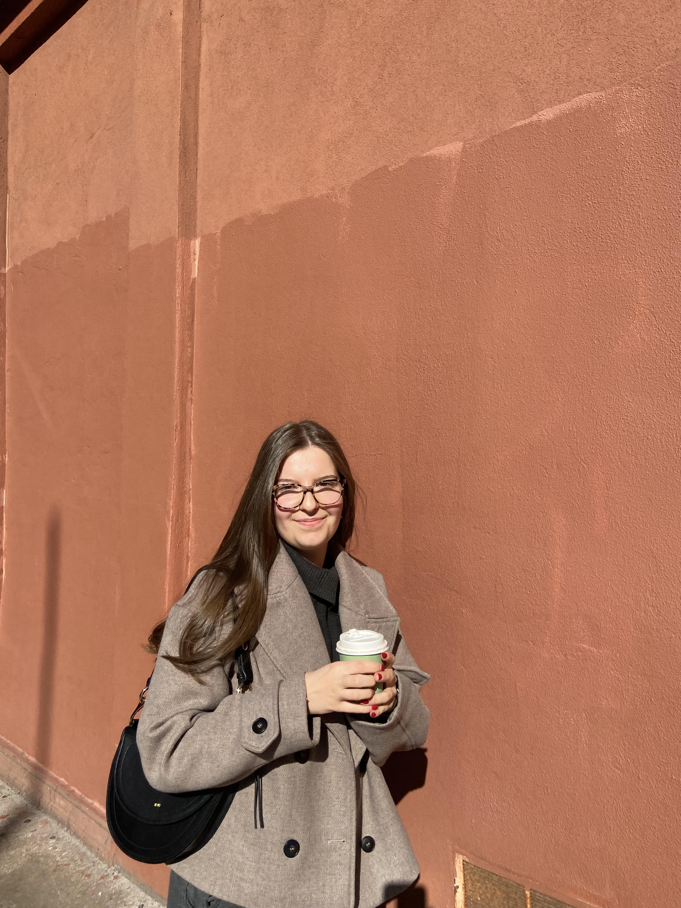
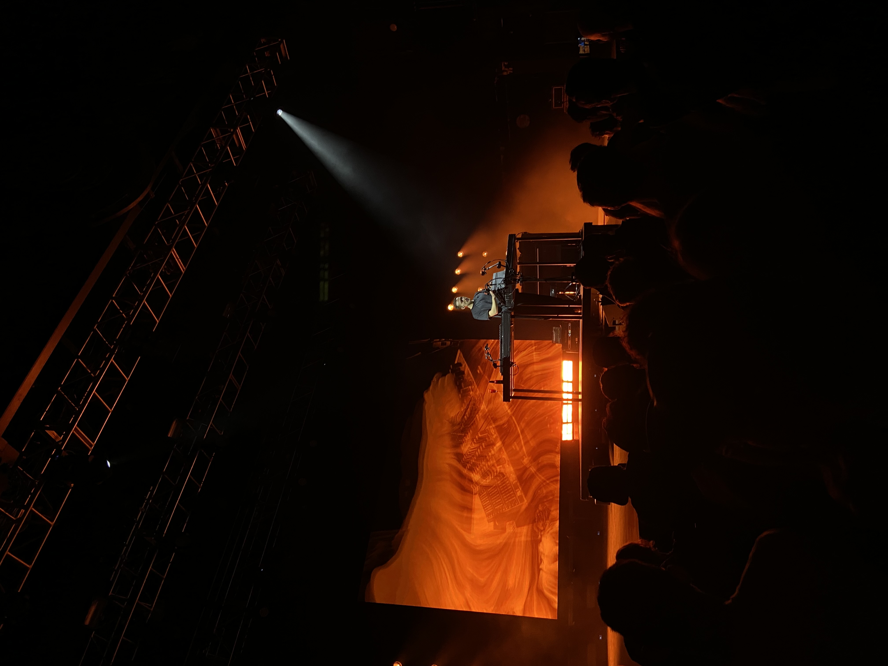
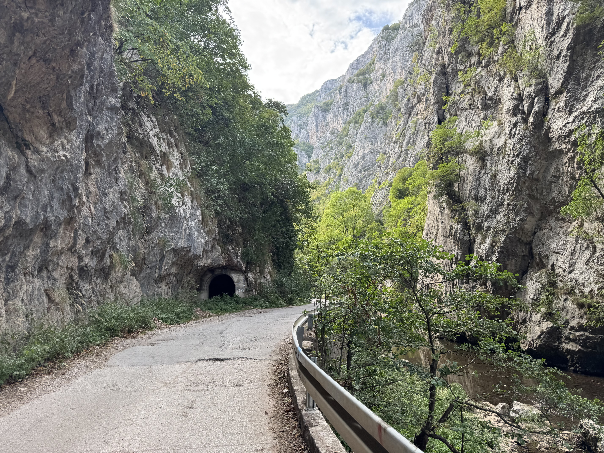
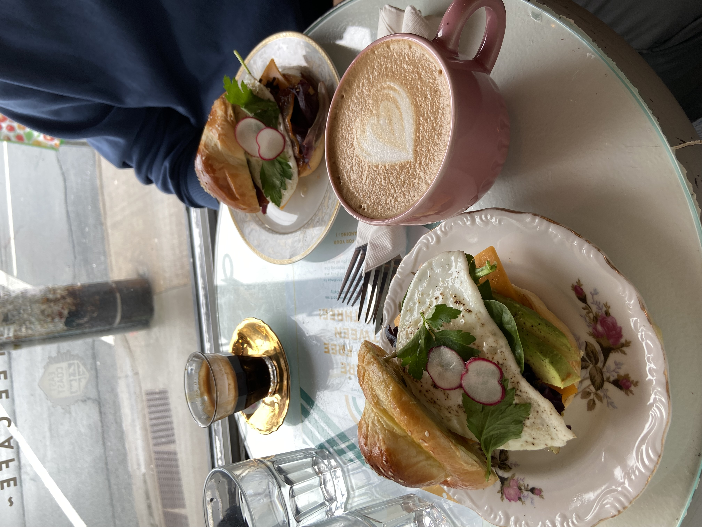

Meet Teodora
I am a recently graduated electrical engineer, driven by my life-long creativity and curiosity as to how things work.
During university, I embarked on multiple projects that would strengthen my skills, such as building an autonomous robot. As I often found that I was one of the only women in STEM-related extracurriculars, I joined Dalhousie's Women in Engineering Society. I quickly ascended to the role of President, where I am dedicated to fostering a supportive community for women in engineering and engaging youth.
I currently work as a Lead Test Engineer, where I apply my technical background to ensure the quality and reliability of engineered systems. My focus remains on creating technologies that contribute positively to society.
In my free time, I enjoy training at the gym and reading books.
Want to get in touch? Reach me at teomilos16@gmail.com

Life Outside the Lab

Live Music and Concerts
There is nothing that recharges me the way live music does. The energy of a great show, the crowd, the sound hitting you at full force. It is one of my favorite ways to be fully present.

Food and Travel
I explore new cities through food. Give me a local restaurant, an unfamiliar neighborhood, and an open afternoon and I am exactly where I want to be.

Fitness and the Gym
Consistent training taught me more about discipline than almost anything else. The gym is where I show up for myself, build focus, and stay grounded.
I came into engineering because I wanted to build things that work. Now I am channeling that foundation into electrical design, where technical precision meets real world impact. I am not here to do work that is good enough. I am here to do work that is right.